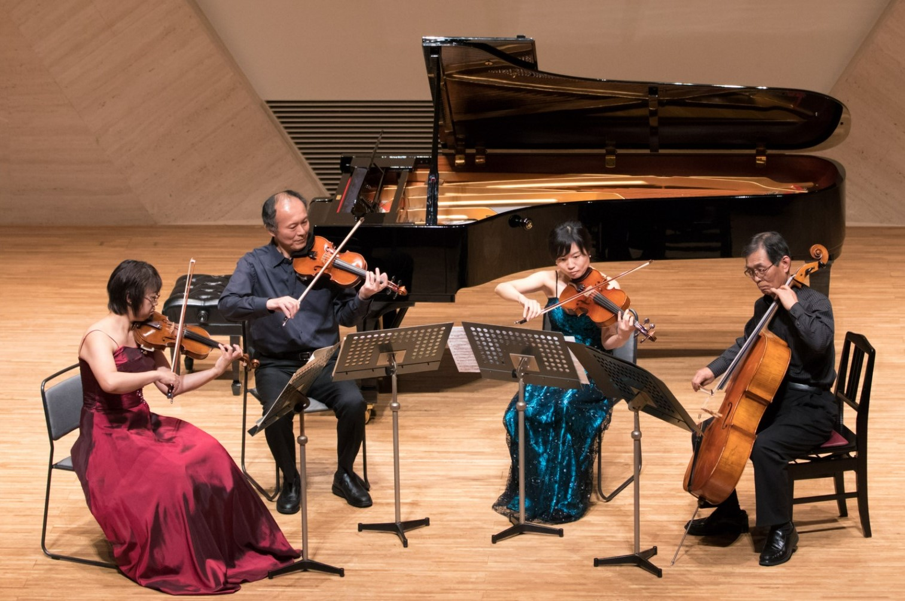
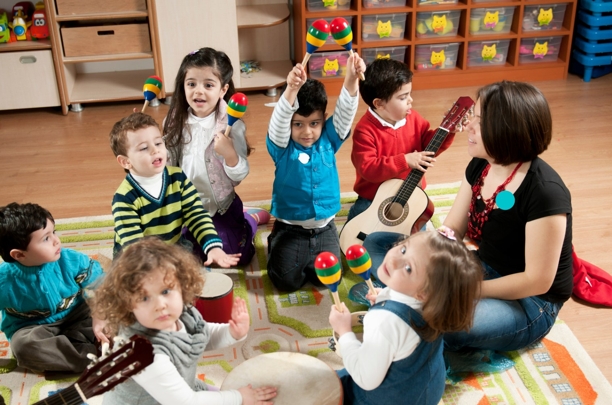

Q比：音樂教室的希望之聲
十年前，懷著對音樂的熱愛和對教育的堅定信念，我們創立了這所音樂教室。
從最初的一間小教室，到如今成為全台最大的音樂教學系統。一路走來始終堅守著「讓音樂融入生活」的創辦理念。
我們相信，音樂不僅僅是一種技藝，更是一種能夠改變人生、帶來希望的力量。正是這份信念，驅使我們致力於公益活動，讓音樂的種子在更多人的心中萌芽。我們的教室不僅開放給有志於學習音樂的學生，還積極參與各種社區服務，讓更多人能夠感受到音樂的美好。
學生人數
+
專業師資
+
全台據點
+
在過去的十年裡，我們培育了超過10000名音樂學子，他們中的許多人已經成為優秀的音樂家、教師和社會的中堅力量。他們的成長和成功，見證了我們教學理念的實踐，也激勵著我們不斷前行。

我們擁有超過300名專業師資，他們來自不同的音樂背景，擁有豐富的教學經驗和卓越的專業能力。他們用心教學，因材施教，致力於幫助每一位學員實現他們的音樂夢想。正是有了這樣一支強大的師資隊伍，我們才能夠在全台各地提供高品質的音樂教育服務，成為全台最大的音樂教學系統。
展望未來，我們將繼續秉持創辦時的初衷，堅持在音樂教育和公益事業上投入更多的熱情和資源。我們希望，通過我們的努力，能夠讓更多的人有機會學習音樂、愛上音樂，並通過音樂找到屬於自己的希望和夢想。

音樂教室，不僅是學習音樂的場所，更是一個充滿希望和夢想的地方。我們期待與您一起，走在這條充滿希望的音樂之路上，共同譜寫美好的未來。